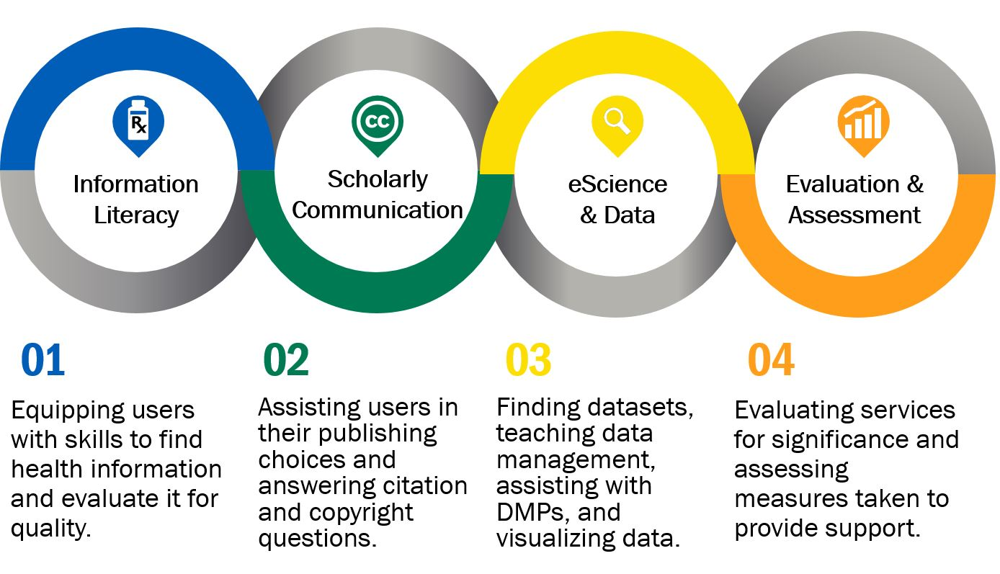
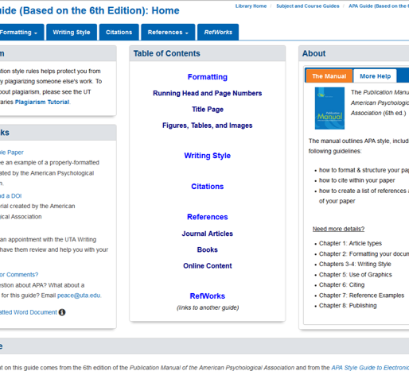
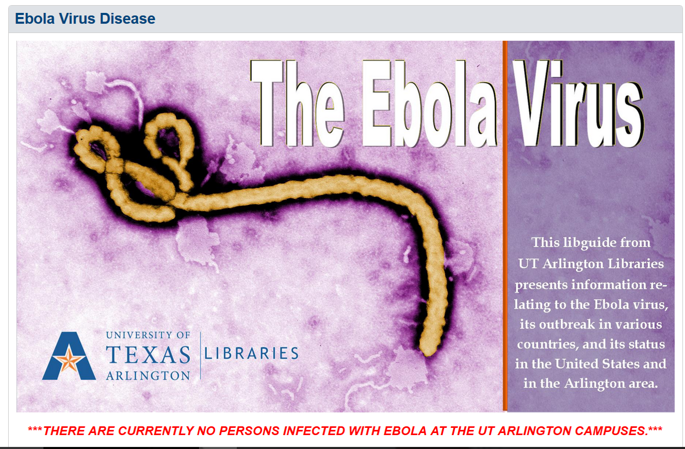

Outreach & Collaboration
WELCH MEDICAL LIBRARY INTERVIEW
Peace Ossom Williamson / @123pow
BACKGROUND
As informationists, we combine our education, experience, and passion to provide expert support to users.
OBJECTIVES
Intended outcomes include the following:
- Supporting research, teaching, and learning
- Promoting best practice in healthcare and research
- Advancing the profession
METHODS
METHODS: Teaching and Learning
- Digital learning objects
- Embedded librarians
- Creating course content using OERs
- Targeted instruction
METHODS: Teaching and Learning
- IL standards & subject knowledge
- Discipline-specific databases and tools (e.g., PubMed, Dynamed, Yale Mesh Analyzer, and Clinical Trials)
- Programs supporting instruction (e.g., LibGuides, Screencapture software, and LMS backend functioning)
METHODS: Research & Scholarship
- Literature reviews and reference management
- Data management principles and depositing guidelines
- Grant and funding support
- Copyright and publishing assistance
Methods: Research & Scholarship
- Citation Managers (e.g., EndNote and RefWorks)
- Funding agency requirements and DMPTool
- Outreach methods (e.g., social media, programming)
- Visualization programs (e.g., Cytoscape and R)
- Other programs (e.g., ArcGIS, SPSS)
RESULTS
RESULTS: Teaching Example

Service and collaboration through LibGuides
RESULTS: Outreach Example

Campus information experts
RESULTS: Data ExampleJohns Hopkins awards under $200,000 for 2013-2016. Data retrieved December 2015 from NIH RePORTER. |
 |
THANK YOU
- Presentation - reveal.js
- Colors - JHU palatte (brand.jhu.edu/color)
- Image Components - snappa.io